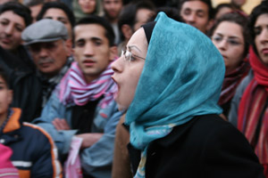

|
|

چند همسران در برابر داوری عموم
شنبه27 بهمن 1386
تغییر برای برابری- هدا امینیان : در جشنواره تاتر فجر امسال نمایشی خیابانی حول محور زنان - تعدد زوجات - با شیوه مجادله آگوستو بوآل و بصورت کارگاهی اجرا شد. این نوع اجرای نمایش که تماشاگر را از شکل منفعل تماشاگر صرف خارج کرده و با ارائه نقشی فعال به نوعی تبدیل به بازیگر می نماید، بسیار مورد توجه تماشاگران قرار گرفت.
این تاتر خیابانی که در چندین نقطه از شهر تهران از جمله میدان آزادی، ایستگاه مترو امام خمینی و روبروی ساختمان تاتر شهر به اجرا درآمد، به موضوع زنان و چند همسری مردان می پرداخت.
روز شنبه بیستم بهمن ماه این تاتر در متروی امام خمینی به اجرا درآمد.محدوده اجرای نمایش به دلیل فشار جمعیت بسیار کوچک شده بود. از میان چند تن از اعضای کمپین یک میلیون امضا که برای تماشای نمایش در آنجا حضور داشتند، دو نفر از آنها توانستند به دلیل شیوه مشارکتی اجرای تاتر، به جای بازیگران به ایفای نقش بپردازند و قسمتی از مطالبات حقوقی خود را، با توجه به مضمون نمایش به گوش حاضرین برسانند.
قوانینی از جمله تعدد زوجات که در قانون مرد می تواند 4 همسر عقدی و بیشمار همسر صیغه ای داشته باشد، یا طلاق که مبنی بر آن مرد می تواند هر زمان که خواست همسر خود را طلاق دهد اما زن اجازه طلاق ندارد، حضانت ...از مواردی بود که طبق موضوع نمایش، افراد به آن پرداختند که این قوانین از جمله موارد مورد نظر در دفترچه و بیانیه کمپین برای تغییر است. این مسئله که قرآن شرط چند همسری برای مردان را رعایت عدالت میان آنها گذاشته است و خود به طور مصرح اعلام کرده است که نمی توان عدالت را میان آنان برقرار کرد، از دیگر صحبت هایی بود که در اجرا مطرح شد.

واکنش تماشاچیان به موضوع ازدواج مجدد بسیار قابل تامل بود. بسیاری از آنان ادعا می کردند در این نمایش نکات چندی را در مورد قوانین حقوقی موجود آموخته اند.در واقع، مشاهده نابرابری حقوقی و تبعیض علیه زنان در نمایشی از زندگی روزمره هزاران زن ایرانی وجستجو برای راه یابی برای آن تماشاچیان را از تماشگر صرف به کنشگری فعال تبدیل کرده و به تامل واداشته بود. مردان و زنان با همذات پنداری با مرد و زن بازیگری که واگوی بخشی از واقعیت زندگی زنان و مردان بودند، لحظه ای در قالب نقش، اندیشه و منش خود را در برابر خودشان و عموم به داوری می گذاشتند.
در حاشیه همین تاتر خیابانی که در روز پنجشنبه مقابل تاتر شهر تهران مجددا برگزار شد، دو نفر از اعضای کمپین، راحله عسگری زاده و نسیم خسروی برای عکاسی و تهیه گزارش خبری شرکت داشتند. آنها در پایان این برنامه در حالیکه مشغول جمع آوری امضا برای بیانیه کمپین بودند، توسط نیروی انتظامی پارک بازداشت شده و به کلانتری 129 (جامی) برده شدند. سپس آنها را برای بازجویی به آگاهی 8 ، و از آنجا به بازداشتگاه وزرا منتقل کردند.
بدین ترتیب می توان گفت بازی مجادله زنی با همسرش که ازدواج مجدد کرده است با بازداشت واقعی مدافعان حقوق برابر پایان یافت: نقشی که نیروی انتظامی ایفا کرد!
مطلب آزاده فرامرزی ها و عکس های راحله عسگری زاده را در باره این نوع تئاتر ببینید